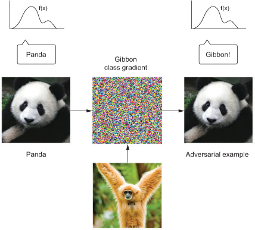
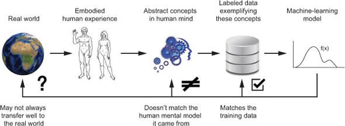
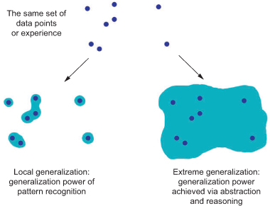
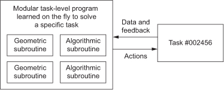
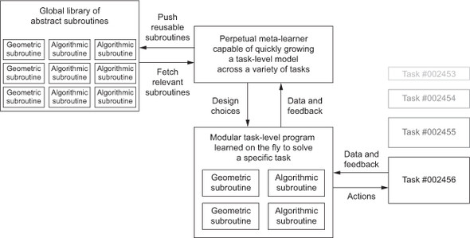

This chapter covers
You’ve almost reached the end of this book. This last chapter will summarize and review core concepts while also expanding your horizons beyond the relatively basic notions you’ve learned so far. Understanding deep learning and AI is a journey, and finishing this book is merely the first step on it. I want to make sure you realize this and are properly equipped to take the next steps of this journey on your own.
We’ll start with a bird’s-eye view of what you should take away from this book. This should refresh your memory regarding some of the concepts you’ve learned. Next, we’ll present an overview of some key limitations of deep learning. To use a tool appropriately, you should not only understand what it can do but also be aware of what it can’t do. Finally, I’ll offer some speculative thoughts about the future evolution of the fields of deep learning, machine learning, and AI. This should be especially interesting to you if you’d like to get into fundamental research. The chapter ends with a short list of resources and strategies for learning further about AI and staying up to date with new advances.
This section briefly synthesizes the key takeaways from this book. If you ever need a quick refresher to help you recall what you’ve learned, you can read these few pages.
First of all, deep learning isn’t synonymous with AI or even with machine learning. Artificial intelligence is an ancient, broad field that can generally be defined as “all attempts to automate cognitive processes”—in other words, the automation of thought. This can range from the very basic, such as an Excel spreadsheet, to the very advanced, like a humanoid robot that can walk and talk.
Machine learning is a specific subfield of AI that aims at automatically developing programs (called models) purely from exposure to training data. This process of turning data into a program is called learning. Although machine learning has been around for a long time, it only started to take off in the 1990s.
Deep learning is one of many branches of machine learning, where the models are long chains of geometric functions, applied one after the other. These operations are structured into modules called layers: deep-learning models are typically stacks of layers—or, more generally, graphs of layers. These layers are parameterized by weights, which are the parameters learned during training. The knowledge of a model is stored in its weights, and the process of learning consists of finding good values for these weights.
Even though deep learning is just one among many approaches to machine learning, it isn’t on an equal footing with the others. Deep learning is a breakout success. Here’s why.
In the span of only a few years, deep learning has achieved tremendous breakthroughs across a wide range of tasks that have been historically perceived as extremely difficult for computers, especially in the area of machine perception: extracting useful information from images, videos, sound, and more. Given sufficient training data (in particular, training data appropriately labeled by humans), it’s possible to extract from perceptual data almost anything that a human could extract. Hence, it’s sometimes said that deep learning has solved perception, although that’s true only for a fairly narrow definition of perception.
Due to its unprecedented technical successes, deep learning has singlehandedly brought about the third and by far the largest AI summer: a period of intense interest, investment, and hype in the field of AI. As this book is being written, we’re in the middle of it. Whether this period will end in the near future, and what happens after it ends, are topics of debate. One thing is certain: in stark contrast with previous AI summers, deep learning has provided enormous business value to a number of large technology companies, enabling human-level speech recognition, smart assistants, human-level image classification, vastly improved machine translation, and more. The hype may (and likely will) recede, but the sustained economic and technological impact of deep learning will remain. In that sense, deep learning could be analogous to the internet: it may be overly hyped up for a few years, but in the longer term it will still be a major revolution that will transform our economy and our lives.
I’m particularly optimistic about deep learning because even if we were to make no further technological progress in the next decade, deploying existing algorithms to every applicable problem would be a game changer for most industries. Deep learning is nothing short of a revolution, and progress is currently happening at an incredibly fast rate, due to an exponential investment in resources and headcount. From where I stand, the future looks bright, although short-term expectations are somewhat overoptimistic; deploying deep learning to the full extent of its potential will take well over a decade.
The most surprising thing about deep learning is how simple it is. Ten years ago, no one expected that we would achieve such amazing results on machine-perception problems by using simple parametric models trained with gradient descent. Now, it turns out that all you need is sufficiently large parametric models trained with gradient descent on sufficiently many examples. As Feynman once said about the universe, “It’s not complicated, it’s just a lot of it.”[1]
Richard Feynman, interview, The World from Another Point of View, Yorkshire Television, 1972.
In deep learning, everything is a vector: everything is a point in a geometric space. Model inputs (text, images, and so on) and targets are first vectorized: turned into an initial input vector space and target vector space. Each layer in a deep-learning model operates one simple geometric transformation on the data that goes through it. Together, the chain of layers in the model forms one complex geometric transformation, broken down into a series of simple ones. This complex transformation attempts to map the input space to the target space, one point at a time. This transformation is parameterized by the weights of the layers, which are iteratively updated based on how well the model is currently performing. A key characteristic of this geometric transformation is that it must be differentiable, which is required in order for us to be able to learn its parameters via gradient descent. Intuitively, this means the geometric morphing from inputs to outputs must be smooth and continuous—a significant constraint.
The entire process of applying this complex geometric transformation to the input data can be visualized in 3D by imagining a person trying to uncrumple a paper ball: the crumpled paper ball is the manifold of the input data that the model starts with. Each movement operated by the person on the paper ball is similar to a simple geometric transformation operated by one layer. The full uncrumpling gesture sequence is the complex transformation of the entire model. Deep-learning models are mathematical machines for uncrumpling complicated manifolds of high-dimensional data.
That’s the magic of deep learning: turning meaning into vectors, into geometric spaces, and then incrementally learning complex geometric transformations that map one space to another. All you need are spaces of sufficiently high dimensionality in order to capture the full scope of the relationships found in the original data.
The whole thing hinges on a single core idea: that meaning is derived from the pairwise relationship between things (between words in a language, between pixels in an image, and so on) and that these relationships can be captured by a distance function. But note that whether the brain implements meaning via geometric spaces is an entirely separate question. Vector spaces are efficient to work with from a computational standpoint, but different data structures for intelligence can easily be envisioned—in particular, graphs. Neural networks initially emerged from the idea of using graphs as a way to encode meaning, which is why they’re named neural networks; the surrounding field of research used to be called connectionism. Nowadays the name neural network exists purely for historical reasons—it’s an extremely misleading name because they’re neither neural nor networks. In particular, neural networks have hardly anything to do with the brain. A more appropriate name would have been layered representations learning or hierarchical representations learning, or maybe even deep differentiable models or chained geometric transforms, to emphasize the fact that continuous geometric space manipulation is at their core.
The technological revolution that’s currently unfolding didn’t start with any single breakthrough invention. Rather, like any other revolution, it’s the product of a vast accumulation of enabling factors—slowly at first, and then suddenly. In the case of deep learning, we can point out the following key factors:
In the future, deep learning will not only be used by specialists—researchers, graduate students, and engineers with an academic profile—but will also be a tool in the toolbox of every developer, much like web technology today. Everyone needs to build intelligent apps: just as every business today needs a website, every product will need to intelligently make sense of user-generated data. Bringing about this future will require us to build tools that make deep learning radically easy to use and accessible to anyone with basic coding abilities. Keras is the first major step in that direction.
Having access to an extremely powerful tool for creating models that map any input space to any target space is great, but the difficult part of the machine-learning workflow is often everything that comes before designing and training such models (and, for production models, what comes after, as well). Understanding the problem domain so as to be able to determine what to attempt to predict, given what data, and how to measure success, is a prerequisite for any successful application of machine learning, and it isn’t something that advanced tools like Keras and TensorFlow can help you with. As a reminder, here’s a quick summary of the typical machine-learning workflow as described in chapter 4:
The three families of network architectures that you should be familiar with are densely connected networks, convolutional networks, and recurrent networks. Each type of network is meant for a specific input modality: a network architecture (dense, convolutional, recurrent) encodes assumptions about the structure of the data: a hypothesis space within which the search for a good model will proceed. Whether a given architecture will work on a given problem depends entirely on the match between the structure of the data and the assumptions of the network architecture.
These different network types can easily be combined to achieve larger multimodal networks, much as you combine LEGO bricks. In a way, deep-learning layers are LEGO bricks for information processing. Here’s a quick overview of the mapping between input modalities and appropriate network architectures:
Now, let’s quickly review the specificities of each network architecture.
A densely connected network is a stack of Dense layers, meant to process vector data (batches of vectors). Such networks assume no specific structure in the input features: they’re called densely connected because the units of a Dense layer are connected to every other unit. The layer attempts to map relationships between any two input features; this is unlike a 2D convolution layer, for instance, which only looks at local relationships.
Densely connected networks are most commonly used for categorical data (for example, where the input features are lists of attributes), such as the Boston Housing Price dataset used in chapter 3. They’re also used as the final classification or regression stage of most networks. For instance, the convnets covered in chapter 5 typically end with one or two Dense layers, and so do the recurrent networks in chapter 6.
Remember: to perform binary classification, end your stack of layers with a Dense layer with a single unit and a sigmoid activation, and use binary_crossentropy as the loss. Your targets should be either 0 or 1:
from keras import models from keras import layers model = models.Sequential() model.add(layers.Dense(32, activation='relu', input_shape=(num_input_features,))) model.add(layers.Dense(32, activation='relu')) model.add(layers.Dense(1, activation='sigmoid')) model.compile(optimizer='rmsprop', loss='binary_crossentropy')
To perform single-label categorical classification (where each sample has exactly one class, no more), end your stack of layers with a Dense layer with a number of units equal to the number of classes, and a softmax activation. If your targets are one-hot encoded, use categorical_crossentropy as the loss; if they’re integers, use sparse_categorical_crossentropy:
model = models.Sequential() model.add(layers.Dense(32, activation='relu', input_shape=(num_input_features,))) model.add(layers.Dense(32, activation='relu')) model.add(layers.Dense(num_classes, activation='softmax')) model.compile(optimizer='rmsprop', loss='categorical_crossentropy')
To perform multilabel categorical classification (where each sample can have several classes), end your stack of layers with a Dense layer with a number of units equal to the number of classes and a sigmoid activation, and use binary_crossentropy as the loss. Your targets should be k-hot encoded:
model = models.Sequential() model.add(layers.Dense(32, activation='relu', input_shape=(num_input_features,))) model.add(layers.Dense(32, activation='relu')) model.add(layers.Dense(num_classes, activation='sigmoid')) model.compile(optimizer='rmsprop', loss='binary_crossentropy')
To perform regression toward a vector of continuous values, end your stack of layers with a Dense layer with a number of units equal to the number of values you’re trying to predict (often a single one, such as the price of a house), and no activation. Several losses can be used for regression, most commonly mean_squared_error (MSE) and mean_absolute_error (MAE):
model = models.Sequential() model.add(layers.Dense(32, activation='relu', input_shape=(num_input_features,))) model.add(layers.Dense(32, activation='relu')) model.add(layers.Dense(num_values)) model.compile(optimizer='rmsprop', loss='mse')
Convolution layers look at spatially local patterns by applying the same geometric transformation to different spatial locations (patches) in an input tensor. This results in representations that are translation invariant, making convolution layers highly data efficient and modular. This idea is applicable to spaces of any dimensionality: 1D (sequences), 2D (images), 3D (volumes), and so on. You can use the Conv1D layer to process sequences (especially text—it doesn’t work as well on timeseries, which often don’t follow the translation-invariance assumption), the Conv2D layer to process images, and the Conv3D layers to process volumes.
Convnets, or convolutional networks, consist of stacks of convolution and max-pooling layers. The pooling layers let you spatially downsample the data, which is required to keep feature maps to a reasonable size as the number of features grows, and to allow subsequent convolution layers to “see” a greater spatial extent of the inputs. Convnets are often ended with either a Flatten operation or a global pooling layer, turning spatial feature maps into vectors, followed by Dense layers to achieve classification or regression.
Note that it’s highly likely that regular convolutions will soon be mostly (or completely) replaced by an equivalent but faster and representationally efficient alternative: the depthwise separable convolution (SeparableConv2D layer). This is true for 3D, 2D, and 1D inputs. When you’re building a new network from scratch, using depthwise separable convolutions is definitely the way to go. The SeparableConv2D layer can be used as a drop-in replacement for Conv2D, resulting in a smaller, faster network that also performs better on its task.
Here’s a typical image-classification network (categorical classification, in this case):
model = models.Sequential()
model.add(layers.SeparableConv2D(32, 3, activation='relu',
input_shape=(height, width, channels)))
model.add(layers.SeparableConv2D(64, 3, activation='relu'))
model.add(layers.MaxPooling2D(2))
model.add(layers.SeparableConv2D(64, 3, activation='relu'))
model.add(layers.SeparableConv2D(128, 3, activation='relu'))
model.add(layers.MaxPooling2D(2))
model.add(layers.SeparableConv2D(64, 3, activation='relu'))
model.add(layers.SeparableConv2D(128, 3, activation='relu'))
model.add(layers.GlobalAveragePooling2D())
model.add(layers.Dense(32, activation='relu'))
model.add(layers.Dense(num_classes, activation='softmax'))
model.compile(optimizer='rmsprop', loss='categorical_crossentropy')
Recurrent neural networks (RNNs) work by processing sequences of inputs one timestep at a time and maintaining a state throughout (a state is typically a vector or set of vectors: a point in a geometric space of states). They should be used preferentially over 1D convnets in the case of sequences where patterns of interest aren’t invariant by temporal translation (for instance, timeseries data where the recent past is more important than the distant past).
Three RNN layers are available in Keras: SimpleRNN, GRU, and LSTM. For most practical purposes, you should use either GRU or LSTM. LSTM is the more powerful of the two but is also more expensive; you can think of GRU as a simpler, cheaper alternative to it.
In order to stack multiple RNN layers on top of each other, each layer prior to the last layer in the stack should return the full sequence of its outputs (each input timestep will correspond to an output timestep); if you aren’t stacking any further RNN layers, then it’s common to return only the last output, which contains information about the entire sequence.
Following is a single RNN layer for binary classification of vector sequences:
model = models.Sequential() model.add(layers.LSTM(32, input_shape=(num_timesteps, num_features))) model.add(layers.Dense(num_classes, activation='sigmoid')) 50model.compile(optimizer='rmsprop', loss='binary_crossentropy')
And this is a stacked RNN layer for binary classification of vector sequences:
model = models.Sequential()
model.add(layers.LSTM(32, return_sequences=True,
input_shape=(num_timesteps, num_features)))
model.add(layers.LSTM(32, return_sequences=True))
model.add(layers.LSTM(32))
model.add(layers.Dense(num_classes, activation='sigmoid'))
model.compile(optimizer='rmsprop', loss='binary_crossentropy')
What will you build with deep learning? Remember, building deep-learning models is like playing with LEGO bricks: layers can be plugged together to map essentially anything to anything, given that you have appropriate training data available and that the mapping is achievable via a continuous geometric transformation of reasonable complexity. The space of possibilities is infinite. This section offers a few examples to inspire you to think beyond the basic classification and regression tasks that have traditionally been the bread and butter of machine learning.
I’ve sorted my suggested applications by input and output modalities. Note that quite a few of them stretch the limits of what is possible—although a model could be trained on all of these tasks, in some cases such a model probably wouldn’t generalize far from its training data. Sections 9.2 and 9.3 will address how these limitations could be lifted in the future.
Almost anything is possible—but not quite anything. Let’s see in the next section what we can’t do with deep learning.
The space of applications that can be implemented with deep learning is nearly infinite. And yet, many applications are completely out of reach for current deep-learning techniques—even given vast amounts of human-annotated data. Say, for instance, that you could assemble a dataset of hundreds of thousands—even millions—of English-language descriptions of the features of a software product, written by a product manager, as well as the corresponding source code developed by a team of engineers to meet these requirements. Even with this data, you could not train a deep-learning model to read a product description and generate the appropriate codebase. That’s just one example among many. In general, anything that requires reasoning—like programming or applying the scientific method—long-term planning, and algorithmic data manipulation is out of reach for deep-learning models, no matter how much data you throw at them. Even learning a sorting algorithm with a deep neural network is tremendously difficult.
This is because a deep-learning model is just a chain of simple, continuous geometric transformations mapping one vector space into another. All it can do is map one data manifold X into another manifold Y, assuming the existence of a learnable continuous transform from X to Y. A deep-learning model can be interpreted as a kind of program; but, inversely, most programs can’t be expressed as deep-learning models—for most tasks, either there exists no corresponding deep-neural network that solves the task or, even if one exists, it may not be learnable: the corresponding geometric transform may be far too complex, or there may not be appropriate data available to learn it.
Scaling up current deep-learning techniques by stacking more layers and using more training data can only superficially palliate some of these issues. It won’t solve the more fundamental problems that deep-learning models are limited in what they can represent and that most of the programs you may wish to learn can’t be expressed as a continuous geometric morphing of a data manifold.
One real risk with contemporary AI is misinterpreting what deep-learning models do and overestimating their abilities. A fundamental feature of humans is our theory of mind: our tendency to project intentions, beliefs, and knowledge on the things around us. Drawing a smiley face on a rock suddenly makes it “happy”—in our minds. Applied to deep learning, this means that, for instance, when we’re able to somewhat successfully train a model to generate captions to describe pictures, we’re led to believe that the model “understands” the contents of the pictures and the captions it generates. Then we’re surprised when any slight departure from the sort of images present in the training data causes the model to generate completely absurd captions (see figure 9.1).
Figure 9.1. Failure of an image-captioning system based on deep learning
In particular, this is highlighted by adversarial examples, which are samples fed to a deep-learning network that are designed to trick the model into misclassifying them. You’re already aware that, for instance, it’s possible to do gradient ascent in input space to generate inputs that maximize the activation of some convnet filter—this is the basis of the filter-visualization technique introduced in chapter 5, as well as the DeepDream algorithm in chapter 8. Similarly, through gradient ascent, you can slightly modify an image in order to maximize the class prediction for a given class. By taking a picture of a panda and adding to it a gibbon gradient, we can get a neural network to classify the panda as a gibbon (see figure 9.2). This evidences both the brittleness of these models and the deep difference between their input-to-output mapping and our human perception.
Figure 9.2. An adversarial example: imperceptible changes in an image can upend a model’s classification of the image.

In short, deep-learning models don’t have any understanding of their input—at least, not in a human sense. Our own understanding of images, sounds, and language is grounded in our sensorimotor experience as humans. Machine-learning models have no access to such experiences and thus can’t understand their inputs in a human-relatable way. By annotating large numbers of training examples to feed into our models, we get them to learn a geometric transform that maps data to human concepts on a specific set of examples, but this mapping is a simplistic sketch of the original model in our minds—the one developed from our experience as embodied agents. It’s like a dim image in a mirror (see figure 9.3).
Figure 9.3. Current machine-learning models: like a dim image in a mirror

As a machine-learning practitioner, always be mindful of this, and never fall into the trap of believing that neural networks understand the task they perform—they don’t, at least not in a way that would make sense to us. They were trained on a different, far narrower task than the one we wanted to teach them: that of mapping training inputs to training targets, point by point. Show them anything that deviates from their training data, and they will break in absurd ways.
There are fundamental differences between the straightforward geometric morphing from input to output that deep-learning models do, and the way humans think and learn. It isn’t only the fact that humans learn by themselves from embodied experience instead of being presented with explicit training examples. In addition to the different learning processes, there’s a basic difference in the nature of the underlying representations.
Humans are capable of far more than mapping immediate stimuli to immediate responses, as a deep network, or maybe an insect, would. We maintain complex, abstract models of our current situation, of ourselves, and of other people, and can use these models to anticipate different possible futures and perform long-term planning. We can merge together known concepts to represent something we’ve never experienced before—like picturing a horse wearing jeans, for instance, or imagining what we’d do if we won the lottery. This ability to handle hypotheticals, to expand our mental model space far beyond what we can experience directly—to perform abstraction and reasoning—is arguably the defining characteristic of human cognition. I call it extreme generalization: an ability to adapt to novel, never-before-experienced situations using little data or even no new data at all.
This stands in sharp contrast with what deep nets do, which I call local generalization (see figure 9.4). The mapping from inputs to outputs performed by a deep net quickly stops making sense if new inputs differ even slightly from what the net saw at training time. Consider, for instance, the problem of learning the appropriate launch parameters to get a rocket to land on the moon. If you used a deep net for this task and trained it using supervised learning or reinforcement learning, you’d have to feed it thousands or even millions of launch trials: you’d need to expose it to a dense sampling of the input space, in order for it to learn a reliable mapping from input space to output space. In contrast, as humans we can use our power of abstraction to come up with physical models—rocket science—and derive an exact solution that will land the rocket on the moon in one or a few trials. Similarly, if you developed a deep net controlling a human body, and you wanted it to learn to safely navigate a city without getting hit by cars, the net would have to die many thousands of times in various situations until it could infer that cars are dangerous, and develop appropriate avoidance behaviors. Dropped into a new city, the net would have to relearn most of what it knows. On the other hand, humans are able to learn safe behaviors without having to die even once—again, thanks to our power of abstract modeling of hypothetical situations.
Figure 9.4. Local generalization vs. extreme generalization

In short, despite our progress on machine perception, we’re still far from human-level AI. Our models can only perform local generalization, adapting to new situations that must be similar to past data, whereas human cognition is capable of extreme generalization, quickly adapting to radically novel situations and planning for long-term future situations.
Here’s what you should remember: the only real success of deep learning so far has been the ability to map space X to space Y using a continuous geometric transform, given large amounts of human-annotated data. Doing this well is a game-changer for essentially every industry, but it’s still a long way from human-level AI.
To lift some of the limitations we have discussed and create AI that can compete with human brains, we need to move away from straightforward input-to-output mappings and on to reasoning and abstraction. A likely appropriate substrate for abstract modeling of various situations and concepts is that of computer programs. We said previously that machine-learning models can be defined as learnable programs; currently we can only learn programs that belong to a narrow and specific subset of all possible programs. But what if we could learn any program, in a modular and reusable way? Let’s see in the next section what the road ahead may look like.
This is a more speculative section aimed at opening horizons for people who want to join a research program or begin doing independent research. Given what we know of how deep nets work, their limitations, and the current state of the research landscape, can we predict where things are headed in the medium term? Following are some purely personal thoughts. Note that I don’t have a crystal ball, so a lot of what I anticipate may fail to become reality. I’m sharing these predictions not because I expect them to be proven completely right in the future, but because they’re interesting and actionable in the present.
At a high level, these are the main directions in which I see promise:
Additionally, note that these considerations aren’t specific to the sort of supervised learning that has been the bread and butter of deep learning so far—rather, they’re applicable to any form of machine learning, including unsupervised, self-supervised, and reinforcement learning. It isn’t fundamentally important where your labels come from or what your training loop looks like; these different branches of machine learning are different facets of the same construct. Let’s dive in.
As noted in the previous section, a necessary transformational development that we can expect in the field of machine learning is a move away from models that perform purely pattern recognition and can only achieve local generalization, toward models capable of abstraction and reasoning that can achieve extreme generalization. Current AI programs that are capable of basic forms of reasoning are all hardcoded by human programmers: for instance, software that relies on search algorithms, graph manipulation, and formal logic. In DeepMind’s AlphaGo, for example, most of the intelligence on display is designed and hardcoded by expert programmers (such as Monte Carlo Tree Search); learning from data happens only in specialized submodules (value networks and policy networks). But in the future, such AI systems may be fully learned, with no human involvement.
What path could make this happen? Consider a well-known type of network: RNNs. It’s important to note that RNNs have slightly fewer limitations than feedforward networks. That’s because RNNs are a bit more than mere geometric transformations: they’re geometric transformations repeatedly applied inside a for loop. The temporal for loop is itself hardcoded by human developers: it’s a built-in assumption of the network. Naturally, RNNs are still extremely limited in what they can represent, primarily because each step they perform is a differentiable geometric transformation, and they carry information from step to step via points in a continuous geometric space (state vectors). Now imagine a neural network that’s augmented in a similar way with programming primitives—but instead of a single hardcoded for loop with hardcoded geometric memory, the network includes a large set of programming primitives that the model is free to manipulate to expand its processing function, such as if branches, while statements, variable creation, disk storage for long-term memory, sorting operators, advanced data structures (such as lists, graphs, and hash tables), and many more. The space of programs that such a network could represent would be far broader than what can be represented with current deep-learning models, and some of these programs could achieve superior generalization power.
We’ll move away from having, on one hand, hardcoded algorithmic intelligence (handcrafted software) and, on the other hand, learned geometric intelligence (deep learning). Instead, we’ll have a blend of formal algorithmic modules that provide reasoning and abstraction capabilities, and geometric modules that provide informal intuition and pattern-recognition capabilities. The entire system will be learned with little or no human involvement.
A related subfield of AI that I think may be about to take off in a big way is program synthesis, in particular neural program synthesis. Program synthesis consists of automatically generating simple programs by using a search algorithm (possibly genetic search, as in genetic programming) to explore a large space of possible programs. The search stops when a program is found that matches the required specifications, often provided as a set of input-output pairs. This is highly reminiscent of machine learning: given training data provided as input-output pairs, we find a program that matches inputs to outputs and can generalize to new inputs. The difference is that instead of learning parameter values in a hardcoded program (a neural network), we generate source code via a discrete search process.
I definitely expect this subfield to see a wave of renewed interest in the next few years. In particular, I expect the emergence of a crossover subfield between deep learning and program synthesis, where instead of generating programs in a general-purpose language, we’ll generate neural networks (geometric data-processing flows) augmented with a rich set of algorithmic primitives, such as for loops and many others (see figure 9.5). This should be far more tractable and useful than directly generating source code, and it will dramatically expand the scope of problems that can be solved with machine learning—the space of programs that we can generate automatically, given appropriate training data. Contemporary RNNs can be seen as a prehistoric ancestor of such hybrid algorithmic-geometric models.
Figure 9.5. A learned program relying on both geometric primitives (pattern recognition, intuition) and algorithmic primitives (reasoning, search, memory)

If machine-learning models become more like programs, then they will mostly no longer be differentiable—these programs will still use continuous geometric layers as subroutines, which will be differentiable, but the model as a whole won’t be. As a result, using backpropagation to adjust weight values in a fixed, hardcoded network can’t be the method of choice for training models in the future—at least, it can’t be the entire story. We need to figure out how to train non-differentiable systems efficiently. Current approaches include genetic algorithms, evolution strategies, certain reinforcement-learning methods, and alternating direction method of multipliers (ADMM). Naturally, gradient descent isn’t going anywhere; gradient information will always be useful for optimizing differentiable parametric functions. But our models will become increasingly more ambitious than mere differentiable parametric functions, and thus their automatic development (the learning in machine learning) will require more than backpropagation.
In addition, backpropagation is end to end, which is a great thing for learning good chained transformations but is computationally inefficient because it doesn’t fully take advantage of the modularity of deep networks. To make something more efficient, there’s one universal recipe: introduce modularity and hierarchy. So we can make backpropagation more efficient by introducing decoupled training modules with a synchronization mechanism between them, organized in a hierarchical fashion. This strategy is somewhat reflected in DeepMind’s recent work on synthetic gradients. I expect more along these lines in the near future. I can imagine a future where models that are globally non-differentiable (but feature differentiable parts) are trained—grown—using an efficient search process that doesn’t use gradients, whereas the differentiable parts are trained even faster by taking advantage of gradients using a more efficient version of backpropagation.
In the future, model architectures will be learned rather than be handcrafted by engineer-artisans. Learning architectures goes hand in hand with the use of richer sets of primitives and program-like machine-learning models.
Currently, most of the job of a deep-learning engineer consists of munging data with Python scripts and then tuning the architecture and hyperparameters of a deep network at length to get a working model—or even to get a state-of-the-art model, if the engineer is that ambitious. Needless to say, that isn’t an optimal setup. But AI can help. Unfortunately, the data-munging part is tough to automate, because it often requires domain knowledge as well as a clear, high-level understanding of what the engineer wants to achieve. Hyperparameter tuning, however, is a simple search procedure; and in that case we know what the engineer wants to achieve: it’s defined by the loss function of the network being tuned. It’s already common practice to set up basic AutoML systems that take care of most model knob tuning. I even set up my own, years ago, to win Kaggle competitions.
At the most basic level, such a system would tune the number of layers in a stack, their order, and the number of units or filters in each layer. This is commonly done with libraries such as Hyperopt, which we discussed in chapter 7. But we can also be far more ambitious and attempt to learn an appropriate architecture from scratch, with as few constraints as possible: for instance, via reinforcement learning or genetic algorithms.
Another important AutoML direction involves learning model architecture jointly with model weights. Because training a new model from scratch every time we try a slightly different architecture is tremendously inefficient, a truly powerful AutoML system would evolve architectures at the same time the features of the model were being tuned via backpropagation on the training data. Such approaches are beginning to emerge as I write these lines.
When this starts to happen, the jobs of machine-learning engineers won’t disappear—rather, engineers will move up the value-creation chain. They will begin to put much more effort into crafting complex loss functions that truly reflect business goals and understanding how their models impact the digital ecosystems in which they’re deployed (for example, the users who consume the model’s predictions and generate the model’s training data)—problems that only the largest companies can afford to consider at present.
If models become more complex and are built on top of richer algorithmic primitives, then this increased complexity will require higher reuse between tasks, rather than training a new model from scratch every time we have a new task or a new dataset. Many datasets don’t contain enough information for us to develop a new, complex model from scratch, and it will be necessary to use information from previously encountered datasets (much as you don’t learn English from scratch every time you open a new book—that would be impossible). Training models from scratch on every new task is also inefficient due to the large overlap between the current tasks and previously encountered tasks.
A remarkable observation has been made repeatedly in recent years: training the same model to do several loosely connected tasks at the same time results in a model that’s better at each task. For instance, training the same neural machine-translation model to perform both English-to-German translation and French-to-Italian translation will result in a model that’s better at each language pair. Similarly, training an image-classification model jointly with an image-segmentation model, sharing the same convolutional base, results in a model that’s better at both tasks. This is fairly intuitive: there’s always some information overlap between seemingly disconnected tasks, and a joint model has access to a greater amount of information about each individual task than a model trained on that specific task only.
Currently, when it comes to model reuse across tasks, we use pretrained weights for models that perform common functions, such as visual feature extraction. You saw this in action in chapter 5. In the future, I expect a generalized version of this to be commonplace: we’ll use not only previously learned features (submodel weights) but also model architectures and training procedures. As models become more like programs, we’ll begin to reuse program subroutines like the functions and classes found in human programming languages.
Think of the process of software development today: once an engineer solves a specific problem (HTTP queries in Python, for instance), they package it as an abstract, reusable library. Engineers who face a similar problem in the future will be able to search for existing libraries, download one, and use it in their own project. In a similar way, in the future, metalearning systems will be able to assemble new programs by sifting through a global library of high-level reusable blocks. When the system finds itself developing similar program subroutines for several different tasks, it can come up with an abstract, reusable version of the subroutine and store it in the global library (see figure 9.6). Such a process will implement abstraction: a necessary component for achieving extreme generalization. A subroutine that’s useful across different tasks and domains can be said to abstract some aspect of problem solving. This definition of abstraction is similar to the notion of abstraction in software engineering. These subroutines can be either geometric (deep-learning modules with pretrained representations) or algorithmic (closer to the libraries that contemporary software engineers manipulate).
Figure 9.6. A meta-learner capable of quickly developing task-specific models using reusable primitives (both algorithmic and geometric), thus achieving extreme generalization

In short, here’s my long-term vision for machine learning:
As final parting words, I want to give you some pointers about how to keep learning and updating your knowledge and skills after you’ve turned the last page of this book. The field of modern deep learning, as we know it today, is only a few years old, despite a long, slow prehistory stretching back decades. With an exponential increase in financial resources and research headcount since 2013, the field as a whole is now moving at a frenetic pace. What you’ve learned in this book won’t stay relevant forever, and it isn’t all you’ll need for the rest of your career.
Fortunately, there are plenty of free online resources that you can use to stay up to date and expand your horizons. Here are a few.
One effective way to acquire real-world experience is to try your hand at machine-learning competitions on Kaggle (https://kaggle.com). The only real way to learn is through practice and actual coding—that’s the philosophy of this book, and Kaggle competitions are the natural continuation of this. On Kaggle, you’ll find an array of constantly renewed data-science competitions, many of which involve deep learning, prepared by companies interested in obtaining novel solutions to some of their most challenging machine-learning problems. Fairly large monetary prizes are offered to top entrants.
Most competitions are won using either the XGBoost library (for shallow machine learning) or Keras (for deep learning). So you’ll fit right in! By participating in a few competitions, maybe as part of a team, you’ll become more familiar with the practical side of some of the advanced best practices described in this book, especially hyperparameter tuning, avoiding validation-set overfitting, and model ensembling.
Deep-learning research, in contrast with some other scientific fields, takes places completely in the open. Papers are made publicly and freely accessible as soon as they’re finalized, and a lot of related software is open source. arXiv (https://arxiv.org)—pronounced “archive” (the X stands for the Greek chi)—is an open-access preprint server for physics, mathematics, and computer science research papers. It has become the de facto way to stay up to date on the bleeding edge of machine learning and deep learning. The large majority of deep-learning researchers upload any paper they write to arXiv shortly after completion. This allows them to plant a flag and claim a specific finding without waiting for a conference acceptance (which takes months), which is necessary given the fast pace of research and the intense competition in the field. It also allows the field to move extremely fast: all new findings are immediately available for all to see and to build on.
An important downside is that the sheer quantity of new papers posted every day on arXiv makes it impossible to even skim them all; and the fact that they aren’t peer reviewed makes it difficult to identify those that are both important and high quality. It’s difficult, and becoming increasingly more so, to find the signal in the noise. Currently, there isn’t a good solution to this problem. But some tools can help: an auxiliary website called arXiv Sanity Preserver (http://arxiv-sanity.com) serves as a recommendation engine for new papers and can help you keep track of new developments within a specific narrow vertical of deep learning. Additionally, you can use Google Scholar (https://scholar.google.com) to keep track of publications by your favorite authors.
With about 200,000 users as of November 2017 and growing fast, Keras has a large ecosystem of tutorials, guides, and related open source projects:
This is the end of Deep Learning with Python! I hope you’ve learned a thing or two about machine learning, deep learning, Keras, and maybe even cognition in general. Learning is a lifelong journey, especially in the field of AI, where we have far more unknowns on our hands than certitudes. So please go on learning, questioning, and researching. Never stop. Because even given the progress made so far, most of the fundamental questions in AI remain unanswered. Many haven’t even been properly asked yet.